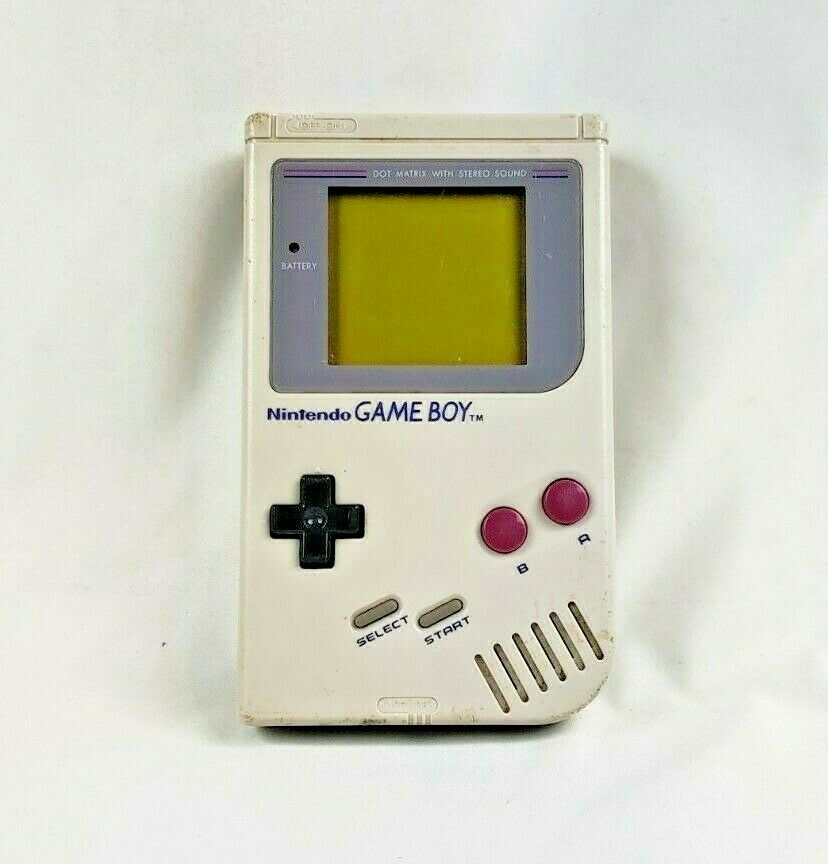
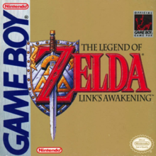
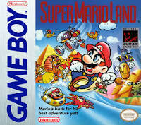
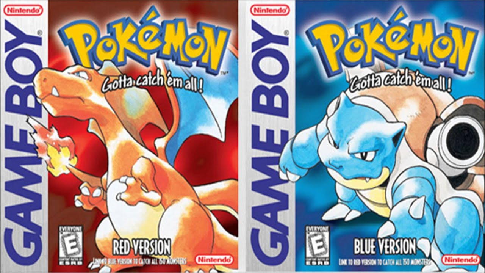

This was Nintendos first overly sucessful handheld made. the gameboy spread like wildfire when released in the north american markets if you were a kid in the mid to late 80s there is a good chance that you had one of them or atleast played with one Gameboy had a few different games relased that were a hit like mario world and more derivitives of the mario franchise alwell as pokemon when it had first come out you would have to suffer playing the games in black and white that sucks! luckily we had some weird led lights that kind of worked when plugged into the gameboy. Some of the best selling games include links awakening pokemon red and blue version aswell as yellow version,super mario land and obvcourse Tetris!
   